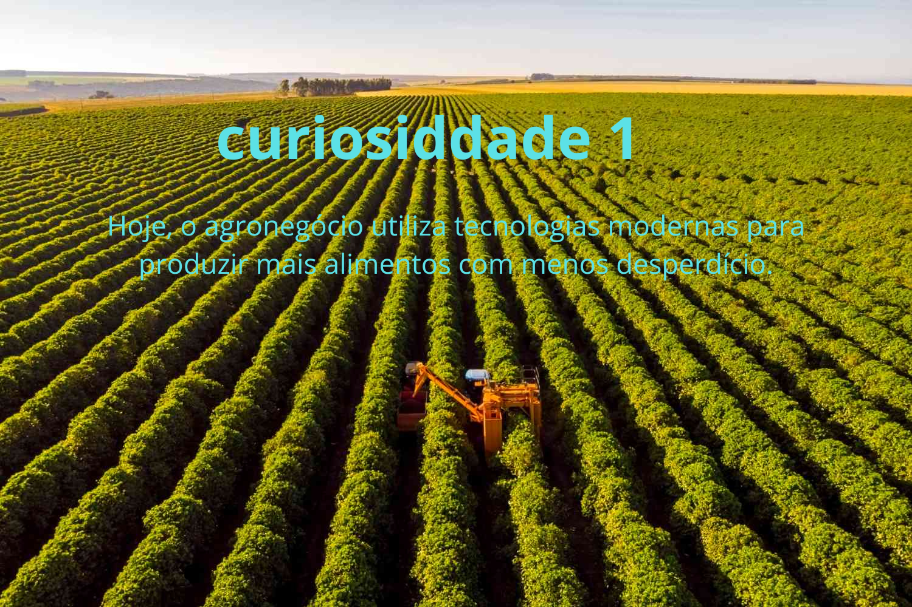

O agro alimenta o mundo
Todos os dias, milhões de pessoas dependem do trabalho realizado no campo. É da agricultura e da pecuária que vêm alimentos como arroz, feijão, frutas, verduras, leite, carne, café e tantos outros produtos presentes na nossa rotina. Muito antes de chegarem aos supermercados, esses alimentos passam por um longo processo de cultivo, colheita, armazenamento, transporte e distribuição. O agronegócio é essencial para garantir a segurança alimentar da população e contribuir para o abastecimento de diversos países.
Bem-vindo

A tecnologia transformou o trabalho no campo
Hoje, o agronegócio utiliza tecnologias modernas para produzir mais alimentos com menos desperdício. Tratores equipados com GPS conseguem plantar em linhas perfeitamente alinhadas, drones monitoram a saúde das plantações e sensores analisam a umidade do solo, indicando exatamente quando é necessário irrigar. Além disso, programas de computador ajudam os produtores a tomar decisões mais precisas, aumentando a produtividade e reduzindo custos.
A sustentabilidade é cada vez mais importante
Ao contrário do que muitas pessoas imaginam, muitos produtores rurais adotam práticas sustentáveis para preservar o meio ambiente. Entre elas estão o plantio direto, que reduz a erosão do solo, a recuperação de áreas degradadas, o uso racional da água e a integração entre lavoura, pecuária e floresta. Essas técnicas permitem produzir alimentos de forma mais eficiente, protegendo os recursos naturais para as futuras gerações.
As abelhas são fundamentais para a produção de alimentos
Grande parte das frutas, verduras e sementes depende da polinização realizada pelas abelhas e outros insetos. Durante esse processo, elas transportam o pólen entre as flores, permitindo que as plantas produzam frutos e sementes. Estima-se que cerca de 75% das culturas agrícolas destinadas à alimentação humana dependam, em algum grau, da polinização. Por isso, proteger esses insetos é essencial para garantir a produção de alimentos.
O café brasileiro é referência mundial
O Brasil é o maior produtor e exportador de café do mundo há mais de 150 anos. O cultivo do café gera milhões de empregos diretos e indiretos e movimenta bilhões de reais todos os anos. Além de abastecer o mercado interno, o café brasileiro é reconhecido internacionalmente pela sua qualidade e é exportado para dezenas de países, sendo um dos produtos mais importantes da economia nacional. Esses textos são mais completos e ficam ótimos para um site, pois explicam cada curiosidade de forma clara e interessante.